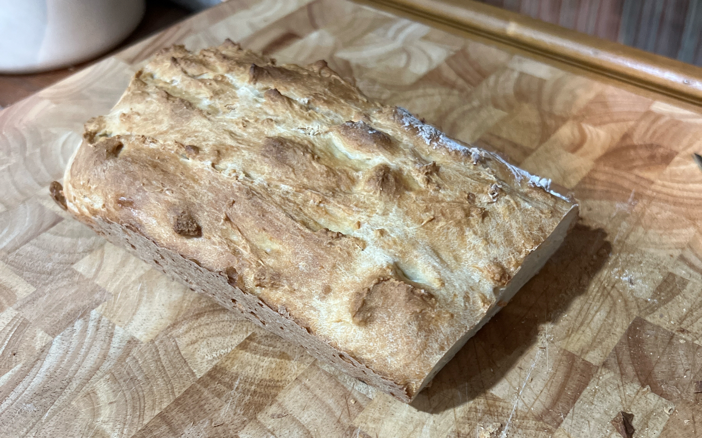

No-Yeast Bread

No-yeast bread in a pinch.
Out of yeast? Out of time? This bread is quick and doesnt require yeast.
Ingredients
3 cups
all-purpose flour
1 teaspoon
yeast
1 1/4 cups
milk
1
egg
Steps
Combine dry ingredients.
Add wet ingredients and mix until a dough forms.
Place in a loaf pan and cook at 425℉ for one hour.